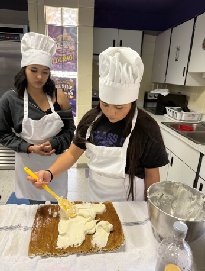

Growing Up Inside the System He Now Leads
Martin didn’t step into leadership as an outsider. He went to school in the same community he now serves. After college, he returned to teach second grade, later moved into high school classrooms, coached sports, became a principal, and eventually took on the superintendent role.
Seven years into the position, he is now considered a veteran in New Mexico, where the average superintendent tenure is just over two years.
That continuity has shaped how change happens in Santa Rosa. When Martin introduces new ideas, they are grounded in shared history and deep understanding of the community. Innovation doesn’t feel imposed. It feels connected to the district’s identity.
Why the Current Education Model Feels Out of Sync
Martin doesn’t believe students or teachers are failing the system. He believes the system itself has fallen behind.
Students today are growing up immersed in technology. They’re using AI, search engines, and digital tools as a natural part of learning and daily life. Schools, however, are still structured around models built for a time when information was scarce and memorization was essential.
Martin sees his role as a bridge – between students who are growing up as digital natives and systems that were built for a very different era. He often finds himself translating between classrooms and policy, between educators who are cautious about change and students who already live in a technology-driven world. That ability to move between perspectives has shaped how innovation takes root in Santa Rosa.
“We don’t need schools to be places that just deliver information anymore,” Martin explains. “We need them to teach students how to think.”
That mismatch – between how students learn and how schools measure learning – is where many of today’s challenges begin.
How Schools Can Better Prepare Students for the Future
At Santa Rosa Consolidated Schools, future readiness is not framed as a single program or initiative. It is guided by three clear priorities.
### 1. Using AI as a Learning Tool
AI is often treated with suspicion in schools, largely because of concerns around cheating. Martin takes a different approach.“Students are going to use AI whether we like it or not,” he says. “The responsibility of schools is to teach them how to use it thoughtfully.”
In Santa Rosa, AI is positioned as a tool that supports critical thinking, exploration, and efficiency.
Teachers are encouraged to use it to personalize learning and reduce administrative load, allowing them to focus more on instruction and relationships.
### 2. Expanding Career and Technical Pathways
For many years, college readiness dominated the definition of success in K–12 education. Martin believes that narrow focus overlooked both student interests and workforce realities.
Santa Rosa has expanded career and technical education (CTE) and work-based learning opportunities so students can explore multiple post-graduation paths. Today, nearly 75% of juniors and seniors participate in internships or hands-on career programs, including welding, construction, culinary arts, healthcare, and other trades.
Beyond technical skills, students develop habits that employers value – communication, reliability, and initiative. In one case, a recent graduate outperformed adult candidates during a professional interview, largely due to her prior internship experience.
### 3. Strengthening Foundations Through Relevance

Students participating in culinary arts pathways at Santa Rosa
Martin is clear that foundational skills like reading, writing, and math remain essential. What needs to change is how students experience them.
When students understand how academic concepts connect to real-world applications, engagement increases. Geometry becomes meaningful in construction. Math matters in culinary budgeting. Literacy supports communication in professional settings.
“When students see the purpose behind what they’re learning,” Martin says, “their motivation changes.”
### When Policy Is Far from the Classroom
Martin also points out that many of today’s accountability decisions are made far from classrooms. As a former president of New Mexico’s Superintendent Association, he has seen how difficult it can be to align policy with the realities of modern learning—especially when those shaping the rules are even further removed from today’s technology and classroom environments.
### Why Growth Matters More Than Benchmarks
Martin often reflects on how students spend more than a decade inside a highly supported school system, surrounded by teachers, counselors, and resources – and then, almost overnight, that support disappears when they graduate.
Helping students understand growth, self-reflection, and responsibility before that moment, he believes, is just as important as any academic benchmark.
“The real comparison should be a student against their own growth,” he explains, “not against a single fixed benchmark.”
### Innovation in a Small, Rural District
Santa Rosa is a small, rural district with limited resources. That reality has required creative problem-solving.
The district brings in industry professionals as part-time instructors, combines teaching roles with district operational needs, and builds partnerships with the local community. These approaches make it possible to offer robust programs without the scale or funding of larger districts.
According to Martin, once meaningful programs are established, interest follows. Community members want to contribute when they see clear purpose and impact.
Lessons for School Leaders Everywhere
- Innovation does not require large budgets
- Rural districts can lead meaningful change
- Academic rigor and relevance are not opposites
- Trust and continuity enable faster progress
Why TomoClub Is Sharing This Story
At TomoClub, we believe the future of education will be shaped by people working inside schools – leaders and educators who are willing to question what no longer works and thoughtfully adapt to what students actually need today.
Tomo Spotlight: Innovations in Education exists to highlight these stories. Not ideal scenarios or polished case studies, but real work happening in real districts, often with limited resources and complex constraints.
Martin Madrid’s story reflects the kind of leadership we believe matters most right now – grounded in community, focused on relevance, and willing to rethink long-held assumptions about what school is for.
This series is our way of learning from practitioners who quietly shape what comes next for education!
Tisya brings a growth lens to education-focused conversations and enjoys sharing ideas through writing.